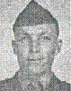

As mentioned in Chapter 1, Roy was one of the original members of Company C. He did not depart USA with the Company because he was in the hospital. Roy recovered and was later assigned to the 21st Marines, 3rd Marine Division. He was killed in action on Iwo Jima although we do not know the date. (See more about Roy in the Iwo Jima chapter). Because of the death of the Battalion Commander and several of his staff officers, the First Battalion was placed in reserve for a couple of days beginning on February 20, 1945. During that period, Rowland Lewis and I managed to locate Roy. We sat on the edge of his foxhole and chatted with him for a while. Considering the amount of fire raining down on the beachead, it was a foolhardy thing to do although we were unscathed.
The following is a chronolgy of Roy Jones' service with Company C.
July 1942 Pvt. Original member of C-1-23 from 9th Marines. 22-31,
General duty.
Aug 1942 1-31 Mess duty.
Sept 1942 21-27, furlough
Oct 1942 General duty
Nov 1942 12th, promoted to PFC from Pvt., to rank from 24-Oct-42
Dec 1942 1-15 Co. barber 16-21, furlough; 22-31 Company barber
Jan 1943 Company barber
Feb 1943
March 1943 Company barber
Apr 1943 Company barber
May 1943 Acting Squad leader & company barber
July 1943 Acting Squad leader, 5-11 Troop movement to Camp Pendelton, Oceanside
Aug 1943 1-6 Acting squad leader; 7-17 furlough 18-31 Acting squad leader
Sept 1943 1 - Acting squad leader; 2-21 Acting Assistant Squad leader
22nd Promoted to Corporal 22-30 Assistant Squad leader.
Oct 1943
Nov 1943
Dec 1943 (In hospital) transferred to base 10th trans to 21st Marines.
Jan 1944
Feb 1945 KIA Iwo Jima
Created by Rowland Lewis
Last Modified 08/09/99